连续信号卷积的计算¶
浙江大学 2022《信号与系统》（胡浩基）第二章听课笔记（教材第 38--39 页）
1 卷积公式与两种算法¶
重点
这个公式要通过做题达到倒背如流。按第二种写法，从里往外读是四步：翻转（\(h(\tau)\to h(-\tau)\)）、平移（移 \(t\)）、相乘（乘 \(x(\tau)\)）、积分（对 \(\tau\) 积分）。与离散卷积相比，只是最后一步由求和换成积分。
两种算法：
-
直接代公式：\(x(t)\)、\(h(t)\) 有简单的表达式（如指数乘 \(u(t)\)）时用（第 2 节）。
-
图解法：\(x(t)\)、\(h(t)\) 是方波、三角波这类分段的图形时用。如果硬写出分段表达式代公式，会非常繁琐；应当在脑子里想象 \(h\) 翻转后从左往右移动、与 \(x\) 重叠的过程（第 3 节）。
重点
两条辅助规则（图解法必用）：
-
取值范围：\(y(t)=x(t)\ast h(t)\) 的最左端 \(=\) \(x\) 的最左端 \(+\) \(h\) 的最左端；最右端 \(=\) \(x\) 的最右端 \(+\) \(h\) 的最右端。
-
验算：卷积结果不跳变。积分是平滑的过程，除非 \(x(t)\) 或 \(h(t)\) 中含冲激，\(y(t)\) 不会跳变。分段算出的结果，在各分段的分界点上左右两边要相等。
2 直接代公式¶
例 1 两个衰减指数的卷积 教材第 38 页例 2-1 \(\frac{1}{b-a}(e^{-at}-e^{-bt})u(t)\)
题目：\(x(t)=e^{-bt}u(t)\)，\(h(t)=e^{-at}u(t)\)（\(a,b\gt{}0\)，\(a\ne b\)），求 \(x(t)\ast h(t)\)。
▸ 先看图形。 乘 \(u(t)\) 的作用是让 \(t\lt{}0\) 的部分全为 \(0\)。\(x(t)\) 在 \(t=0\) 处为 \(1\)，之后向下衰减，\(t\to+\infty\) 时趋于 \(0\)；\(b\) 越大衰减越快。\(h(t)\) 同理。
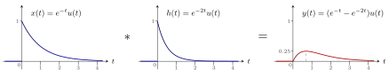
图 1 取 \(b=1\)、\(a=2\) 的例子。结果从 \(0\) 开始，先升后降，在 \(t=\ln2\approx0.69\) 处达到最大值 \(0.25\)；没有跳变，与「卷积结果不跳变」一致。
▸ 代公式。
千万不要代错：\(x(\tau)\) 里 \(t\) 换成 \(\tau\)，\(h(t-\tau)\) 里 \(t\) 换成 \(t-\tau\)，包括 \(u\) 里的自变量。
▸ 关键：两个 \(u\) 决定积分上下限。 \(u(\tau)\) 在 \(\tau\gt{}0\) 时为 \(1\)、\(\tau\lt{}0\) 时为 \(0\)；\(u(t-\tau)\) 在 \(\tau\lt{}t\) 时为 \(1\)、\(\tau\gt{}t\) 时为 \(0\)。两者相乘，只有 \(0\lt{}\tau\lt{}t\) 时 \(u(\tau)\,u(t-\tau)=1\)，其他都为 \(0\)。
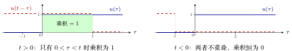
图 2 蓝：\(u(\tau)\)，右半边为 \(1\)；红虚线：\(u(t-\tau)\)，在 \(\tau\lt{}t\) 时为 \(1\)。两者重叠的部分（绿色）就是积分区间 \([0,t]\)。
▸ 分情况。
-
\(t\lt{}0\)：任何 \(\tau\) 都使乘积为 \(0\)，所以 \(x(t)\ast h(t)\equiv0\)。
-
\(t\gt{}0\)：积分区间变成 \([0,t]\)，两个 \(u\) 都等于 \(1\)：
▸ 合并成一个式子。 乘 \(u(t)\) 就把 \(t\lt{}0\) 的部分变成 \(0\)、\(t\gt{}0\) 的部分保持原样：
这个「最后乘 \(u(t)\)」的技巧很常用。教材写成 \(\frac{1}{a-b}\big(e^{-bt}-e^{-at}\big)u(t)\)，两者相同。
3 图解法¶
例 1 方波卷直角三角形 教材第 39 页例 2-2 分两段
题目：\(x(t)\) 是 \([0,1]\) 上高度为 \(1\) 的方波；\(h(t)\) 是 \([0,1]\) 上的直角三角形，\(t=0\) 处高度为 \(1\)，直线降到 \(t=1\) 处为 \(0\)。求 \(y(t)=x(t)\ast h(t)\)。
▸ 第一步：取值范围。 最左端 \(0+0=0\)，最右端 \(1+1=2\)，所以 \(y(t)\) 只在 \([0,2]\) 上有值。
▸ 第二步：翻转。 把 \(h(\tau)\) 沿纵轴翻转成 \(h(-\tau)\)：直角边在 \(\tau=0\)，斜边向左降到 \(\tau=-1\)。\(t=0\) 时，翻转后 \(h\) 的最右端正好碰到 \(x\) 的最左端，重叠为 \(0\)。
▸ 第三步：平移、相乘、积分。 \(h(t-\tau)\) 是把 \(h(-\tau)\) 向右移 \(t\)：它占据 \([t-1,t]\)，在 \(\tau=t\) 处最高（为 \(1\)），在 \(\tau=t-1\) 处为 \(0\)。从左往右移动时，先逐渐移进 \(x\) 的方波，再逐渐移出，要分两种情况：
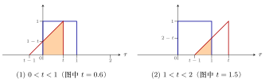
图 3 蓝：\(x(\tau)\)；红：\(h(t-\tau)\)。橙色是两者重叠部分，它的面积就是 \(y(t)\)（\(x\) 的高度为 \(1\)，乘积就是红线下的面积）。
-
\(0\lt{}t\lt{}1\)：重叠部分是梯形，底边从 \(0\) 到 \(t\)，长 \(t\)；左边高 \(1-t\)（红线在 \(\tau=0\) 处的高度），右边高 \(1\)。
\[ y(t)=\frac{(1-t)+1}{2}\cdot t=\frac{(2-t)\,t}{2}. \] -
\(1\lt{}t\lt{}2\)：重叠部分是三角形，从 \(t-1\) 到 \(1\)，底边长 \(1-(t-1)=2-t\)；斜边是 \(45^\circ\)，高也是 \(2-t\)。
\[ y(t)=\frac{(2-t)^2}{2}. \] -
其他（\(t\lt{}0\) 或 \(t\gt{}2\)）：不重叠，\(y(t)=0\)。
▸ 验算：分界点不跳变。 \(t=0\)：\(\frac{(2-0)\cdot0}{2}=0\)，与左边的 \(0\) 一致。\(t=1\)：第一段 \(\frac{1\cdot1}2=\frac12\)，第二段 \(\frac{1^2}2=\frac12\)，一致。\(t=2\)：\(\frac{0^2}2=0\)，与右边的 \(0\) 一致。三个分界点都不跳变。
说明
易错点：第一段的梯形，左边的高是红线在 \(\tau=0\) 处的高度 \(1-t\)，不是 \(t\)。若误用 \(t\)，会算成 \(\frac{(1+t)t}{2}\)，在 \(t=1\) 处等于 \(1\)，与第二段的 \(\frac12\) 不连续，用「不跳变」一验就能发现。
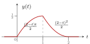
图 4 例 1 的结果：\([0,1]\) 上向上弯地升到 \(\frac12\)，\([1,2]\) 上向下弯地降到 \(0\)，处处连续。
4 两个方波的卷积¶
这两个结论要在理解的基础上记住，第三章会用到。
4.1 宽度相同：三角波¶
重点
\(x(t)\) 是 \([-T_0,T_0]\) 上高度 \(E_1\) 的方波，\(h(t)\) 是 \([-T_0,T_0]\) 上高度 \(E_2\) 的方波，则 \(x(t)\ast h(t)\) 是三角波：
-
在 \([-2T_0,2T_0]\) 上有值；
-
在 \(t=0\) 处达到最大值 \(2T_0E_1E_2\)（重合部分的宽度 \(\times\) \(x\) 的高度 \(\times\) \(h\) 的高度）；
-
两边是直线。
例 1 两个 [-1,1] 上的单位方波 三角波
题目：\(x(t)\)、\(h(t)\) 都是 \([-1,1]\) 上高度为 \(1\) 的方波，求 \(x(t)\ast h(t)\)。
解：
-
取值范围：最左端 \(-1+(-1)=-2\)，最右端 \(1+1=2\)。
-
\(t=-2\) 时两个方波刚好碰上，重叠为 \(0\)。两个方波宽都是 \(2\)，所以再走 \(2\) 个单位（到 \(t=0\)）时完全重合，达到最大值：宽 \(2\) \(\times\) 高 \(1\) \(\times\) 高 \(1\) \(=2\)。
-
之后再走 \(2\) 个单位（到 \(t=2\)）完全分开，回到 \(0\)。
-
移动的距离增加多少，重叠面积就增加（或减少）多少，是线性关系，所以中间都是直线。
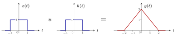
图 5 两个宽度都为 \(2\) 的单位方波，卷积是 \([-2,2]\) 上的三角波，峰值 \(2\)。
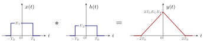
图 6 一般情形：宽度相同（都是 \(2T_0\)）的两个方波，卷积是 \([-2T_0,2T_0]\) 上的三角波，峰值 \(2T_0E_1E_2\)。
4.2 宽度不同：梯形波¶
重点
\(x(t)\) 是 \([-A,A]\) 上高度 \(E_1\) 的方波，\(h(t)\) 是 \([-B,B]\) 上高度 \(E_2\) 的方波，\(A\gt{}B\)，则 \(x(t)\ast h(t)\) 是梯形波：
-
四个拐点的横坐标：\(-A-B,\ \ B-A,\ \ A-B,\ \ A+B\)（\(B-A\) 与 \(A-B\) 互为相反数，梯形左右对称）；
-
平顶高度 \(2BE_1E_2\)（窄方波的宽度 \(\times\) \(E_1\) \(\times\) \(E_2\)）。
▸ 四个拐点怎么来。
-
起点：\(-A-B\)（两个最左端相加），两个方波刚好碰上。
-
窄方波完全移进宽方波，需要再走窄方波的宽度 \(2B\)：\(-A-B+2B=B-A\)，此后重叠面积达到最大 \(2B\cdot E_1E_2\)。
-
窄方波在宽方波里继续走，重叠面积保持不变；能走的距离是宽度之差 \(2A-2B\)：\(B-A+(2A-2B)=A-B\)。
-
再走 \(2B\) 完全移出：\(A-B+2B=A+B\)（两个最右端相加）。
例 2 与 [-1,1] 上的单位方波 梯形波
题目：\(x(t)\) 是 \([-3,3]\) 上高度 \(1\) 的方波，\(h(t)\) 是 \([-1,1]\) 上高度 \(1\) 的方波，求 \(x(t)\ast h(t)\)。
解：\(A=3\)，\(B=1\)。起点 \(-4\)；走窄方波宽度 \(2\) 到 \(-2\)，达到最大值 \(2\times1\times1=2\)；保持不变走 \(6-2=4\) 个单位到 \(2\)；再走 \(2\) 到 \(4\) 回到 \(0\)。
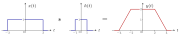
图 7 宽度 \(6\) 与宽度 \(2\) 的单位方波卷积：梯形，拐点 \(-4,-2,2,4\)，平顶高度 \(2\)。
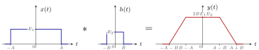
图 8 一般情形（\(A\gt{}B\)）：梯形的四个拐点 \(-A-B\)、\(B-A\)、\(A-B\)、\(A+B\)，平顶高度 \(2BE_1E_2\)。
重点
分段为常数的信号卷积，关键点之间连直线：若 \(x(t)\)、\(h(t)\) 都由若干段方波拼成，算出几个关键点上 \(y(t)\) 的值，用直线依次连起来就是答案。原因：两个方波相对移动时，重叠面积随移动距离线性变化。
5 综合例题¶
例 1 两段台阶卷两段台阶 关键点连直线
题目：\(x(t)\) 在 \([-1,0]\) 上为 \(1\)、\([0,1]\) 上为 \(-2\)；\(h(t)\) 在 \([-1,0]\) 上为 \(1\)、\([0,1]\) 上为 \(2\)。求 \(y(t)=x(t)\ast h(t)\)。
解：
-
取值范围：最左端 \(-1+(-1)=-2\)，最右端 \(1+1=2\)。
-
翻转：\(h(-\tau)\) 在 \([-1,0]\) 上为 \(2\)、\([0,1]\) 上为 \(1\)（左右对调）。\(t=-2\) 时 \(h\) 翻转后的最右端碰到 \(x\) 的最左端，\(y(-2)=0\)。
-
每移一个单位算一次（各段宽度都是 \(1\)，关键点在整数处）：
-
\(t=-1\)：\(h\) 的「\(1\)」那段与 \(x\) 的「\(1\)」那段重合，\(y(-1)=1\times1\times1=1\)。
-
\(t=0\)：\(h\) 的「\(2\)」对 \(x\) 的「\(1\)」、\(h\) 的「\(1\)」对 \(x\) 的「\(-2\)」，\(y(0)=2\times1\times1+(-2)\times1\times1=0\)。
-
\(t=1\)：只剩 \(h\) 的「\(2\)」对 \(x\) 的「\(-2\)」，\(y(1)=(-2)\times2\times1=-4\)。
-
\(t=2\)：完全移出，\(y(2)=0\)。
-
-
关键点之间连直线。
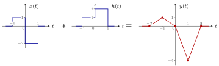
图 9 结果是 \((-2,0)\)、\((-1,1)\)、\((0,0)\)、\((1,-4)\)、\((2,0)\) 五个关键点依次连成的折线。
例 2 方波卷两段台阶 教材第 78 页图 2-44 第二个 关键点连直线
题目：\(x(t)\) 是 \([-1,0]\) 上高度 \(1\) 的方波；\(h(t)\) 在 \([-1,0]\) 上为 \(1\)、\([0,1]\) 上为 \(2\)。求 \(x(t)\ast h(t)\)。
解：取值范围 \([-2,1]\)。\(x\) 是宽度 \(1\) 的单位方波，所以 \(y(t)\) 等于 \(h\) 在长度为 \(1\) 的窗口 \([t,t+1]\) 上的积分：\(y(-2)=0\)，\(y(-1)=\int_{-1}^0h=1\)，\(y(0)=\int_0^1h=2\)，\(y(1)=0\)。关键点连直线。
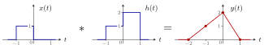
图 10 结果是 \((-2,0)\)、\((-1,1)\)、\((0,2)\)、\((1,0)\) 连成的折线。
例 3 周期方波卷三角波 教材第 78 页图 2-44 最下面一个 周期为 2
题目：\(x(t)\) 是周期为 \(2\) 的方波：在 \((0,1)\) 上为 \(1\)、\((1,2)\) 上为 \(-1\)，向两边无限重复。\(h(t)\) 是 \([0,2]\) 上的三角波，\(t=1\) 处峰值为 \(1\)。求 \(y(t)=x(t)\ast h(t)\)。
▸ 先看结构。 \(x\) 从 \(-\infty\) 延伸到 \(+\infty\)，所以 \(y\) 也是。\(x\) 以 \(2\) 为周期重复，\(h\) 每移 \(2\) 个单位看到的情况完全一样，所以 \(y(t)\) 也是周期为 \(2\) 的函数，只需求出一个周期 \([0,2]\)。
▸ \(t=0\)。 翻转后的三角形占据 \([-2,0]\)，左半边落在 \(x=1\) 的 \((-2,-1)\) 上，右半边落在 \(x=-1\) 的 \((-1,0)\) 上；两半面积相同，正负抵消，\(y(0)=0\)。
▸ \(0\lt{}t\lt{}1\)。 三角形 \(h(t-\tau)\) 占据 \([t-2,t]\)，峰在 \(\tau=t-1\)。它被 \(x\) 的跳变点 \(\tau=-1\)、\(\tau=0\) 分成三块：
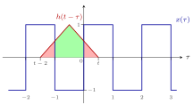
图 11 \(0\lt{}t\lt{}1\)（图中 \(t=0.5\)）：两块红色落在 \(x=+1\) 上，乘 \(+1\)；绿色落在 \(x=-1\) 上，乘 \(-1\)。横轴刻度数字标在方波下沿下方。所以 \(y(t)=\) 两块红色面积 \(-\) 绿色面积。
-
右边红色：\(\tau\in[0,t]\)，是腰长 \(t\) 的等腰直角三角形，面积 \(\frac{t^2}2\)；
-
左边红色：\(\tau\in[t-2,-1]\)，底边长 \(-1-(t-2)=1-t\)，面积 \(\frac{(1-t)^2}2\)；
-
绿色：整个三角形面积 \(\frac{2\times1}2=1\) 减去两块红色：\(1-\frac{t^2}2-\frac{(1-t)^2}2\)。
验算：\(t=0\) 时 \(0+1-1=0\)，与 \(y(0)=0\) 一致。
▸ \(1\lt{}t\lt{}2\)。 三角形占据 \([t-2,t]\)，被 \(\tau=0\)、\(\tau=1\) 分成三块：中间一块落在 \(x=+1\) 的 \((0,1)\) 上，两边两块落在 \(x=-1\) 上。
-
右边：\(\tau\in[1,t]\)，面积 \(\frac{(t-1)^2}2\)；
-
左边：\(\tau\in[t-2,0]\)，底边长 \(2-t\)，面积 \(\frac{(2-t)^2}2\)；
-
中间：\(1-\frac{(t-1)^2}2-\frac{(2-t)^2}2\)。
验算：\(t=1\) 时第一段 \(1+0-1=0\)，第二段 \(1-0-1=0\)，不跳变。
▸ 化简与图形。 第一段 \(=2t^2-2t=-2t(1-t)\)，在 \(t=\frac12\) 处最小为 \(-\frac12\)；第二段 \(=-2(t-1)(t-2)\)，在 \(t=\frac32\) 处最大为 \(\frac12\)。再以 \(2\) 为周期重复。
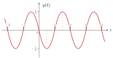
图 12 \(y(t)\)：\((0,1)\) 上是向下的抛物线拱（最低 \(-\frac12\)），\((1,2)\) 上是向上的抛物线拱（最高 \(\frac12\)），以 \(2\) 为周期重复。
6 冲激的尺度变换：易错题¶
重点
冲激的性质与普通信号相反：波形拉伸 \(k\) 倍时，冲激的强度变为 \(k\) 倍；压缩 \(k\) 倍时，强度变为 \(\frac1k\)。第五章还会用到这一点。
例 1 已知 x(3-2t) 的波形，求 x(t) 教材第 31 页 1-9 冲激强度变为 4
题目：\(x(3-2t)\) 的波形是：\(t=1\) 处一个 \(2\) 倍的冲激 \(2\delta(t-1)\)，\([2,3]\) 上为 \(1\)，\([3,4]\) 上为 \(2\)。求 \(x(t)\)。
▸ 换元。 设 \(t'=3-2t\)，则 \(t=\frac{3-t'}2\)，所以 \(x(t')\) 就是已知波形在 \(\frac{3-t'}2\) 处的值。把 \(t'\) 改写回 \(t\)，要求的是已知波形 \(g(t)=x(3-2t)\) 变换成
▸ 三步变换。
-
翻转（前面有负号）：\(g(-t)\)。冲激移到 \(-1\)；台阶变成 \([-3,-2]\) 上为 \(1\)、\([-4,-3]\) 上为 \(2\)。
-
拉伸（系数 \(\left|-\frac12\right|\lt{}1\)，拉伸 \(2\) 倍）：\(g\!\left(-\frac t2\right)\)。冲激移到 \(-2\)；台阶变成 \([-6,-4]\) 上为 \(1\)、\([-8,-6]\) 上为 \(2\)。
-
右移 \(3\)（\(t-3\)）：冲激移到 \(1\)；台阶变成 \([-3,-1]\) 上为 \(1\)、\([-5,-3]\) 上为 \(2\)。
▸ 易错点：冲激的强度。 台阶的高度在变换中不变，但冲激的强度会变。单独算冲激这一项：
所以拉伸那一步，冲激的强度从 \(2\) 变成 \(4\)。若照搬台阶的做法保持强度 \(2\)，答案就错了。
重点
答案：\(x(t)=4\,\delta(t-1)\)，加上 \([-5,-3]\) 上为 \(2\)、\([-3,-1]\) 上为 \(1\) 的台阶。
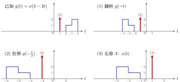
图 13 由 \(x(3-2t)\) 求 \(x(t)\) 的三步。台阶高度不变；冲激（括号里是强度）在拉伸 \(2\) 倍时强度由 \(2\) 变成 \(4\)。